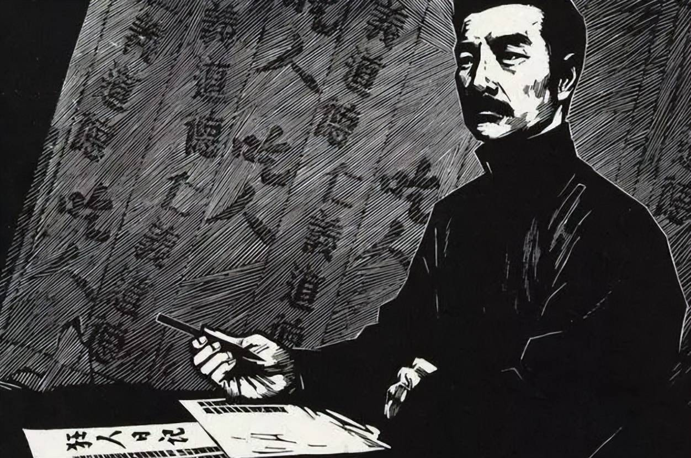

鲁迅很宠孩子
鲁迅老来得子，49岁的时候有了周海婴。起名字的时候，他想到自己在上海住了10年，很有感情。所以 “海婴”的意思就是上海的孩子。他又讲，“如果孩子长大，他不喜欢这个名字，可以改。”真是好爸爸～他还经常赠送周海婴的照片给别人。（虽然不知道对方是否喜欢)在给友人的书信里，他也常常和朋友分享育儿状况：“海婴很好，脸已晒黑，身体也较去年强健，而且近来似乎较为听话，不甚无理取闹。但因年龄渐大之故，唯每晚必须听故事，讲狗熊如何生活，萝卜如何长大，等等。颇为废去不少功夫耳。”“海婴这家伙非常调皮，两三日前竟发表了颇为反动的宣言说‘这种爸爸，什么爸爸’！真难办。现在的孩子更捣乱了。”“他去年还问：‘爸爸可以吃么？’我的答复是：‘吃也可以吃，不过还是不吃罢。’今年就不再问，大约决定不吃了。”
无情未必真豪杰,怜子如何不丈夫！
